All screenshots were taken from the running system (PHP 8.2, MySQL-compatible database, AdminLTE 3.2) on September 28, 2026, using the seed accounts and two sample members (see A.8). Click any screenshot to open it full size.
Who does what
Manager
managerApproves memberships, approves/rejects and releases loans, manages user accounts and settings.
Cashier
cashierRegisters applicants, receives membership fees, deposits, withdrawals, and loan payments; issues official receipts.
Loan Officer
loanofficerFiles loan applications, checks eligibility, updates the delinquency list, prepares reminders and demand letters.
Bookkeeper
bookkeeperCorrects entries (savings reversals, voiding receipts), prepares reports and the salary deduction list.
Board / Auditor
auditorRead-only access to all records, reports, and the audit log.
The default password of the seed accounts is listed in the installation README; change it after installation.
User guide
What each role does in the system, in the order the work happens at the cooperative.
Signing in and the dashboard
Sign in with a username or email and password. After five wrong attempts, sign-in is locked for 30 seconds. The session ends after 15 minutes without activity.
- 1Username or email. Type your username (for example, cashier) or your email address.
- 2Password. Type your password. The eye button shows what you typed.
- 3Sign in. Click Sign in. Five wrong attempts lock sign-in for 30 seconds.
The dashboard shows the day at a glance: active members, the loan portfolio, today's collections, past-due loans, share capital, savings, applications in process, and installments due within 7 days. It also shows a collections chart, quick actions for the signed-in role, and (for the Manager, Bookkeeper, and Auditor) the most recent activity. The sidebar only shows the modules the signed-in role may use.
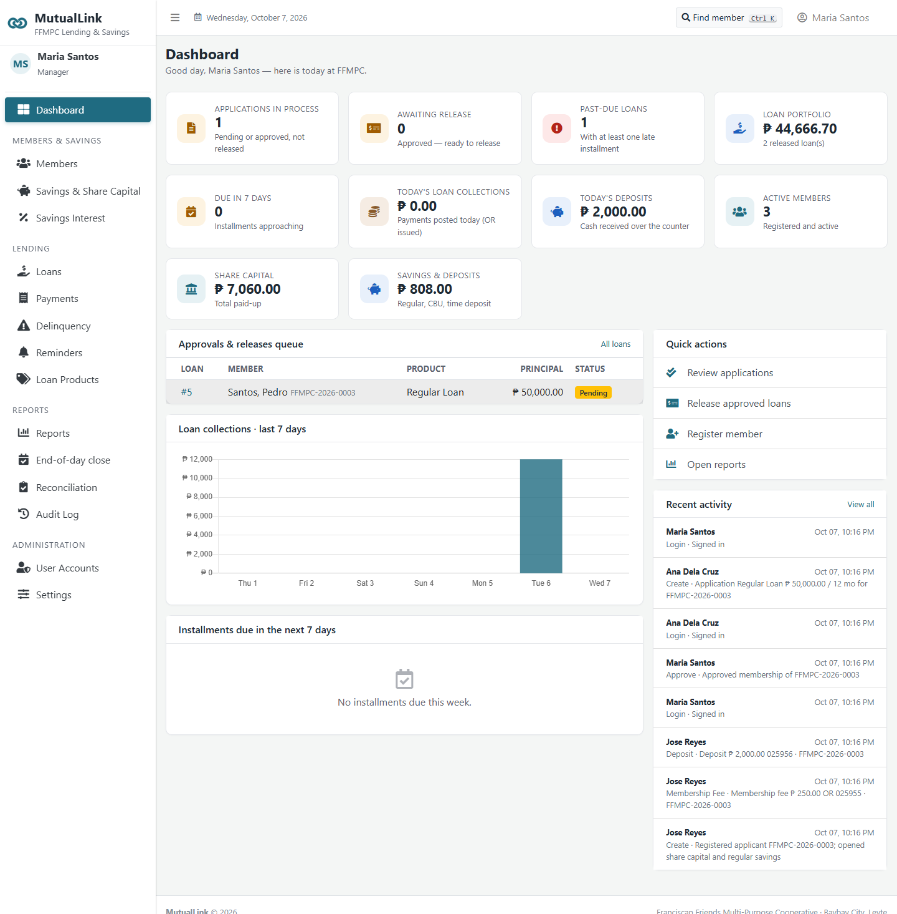
- 1Your menu. The sidebar lists only the modules your role may use.
- 2Today at a glance. Members, loan portfolio, collections, past-due loans, share capital, savings, and upcoming dues.
- 3Quick actions. Shortcuts to the tasks of the signed-in role.
- 4Recent activity. Latest entries from the audit log.
Membership Cashier → Manager
1 Cashier registers the applicant
Members → Register member. The TIN and PMES date are required, and the signature specimen card is ticked when received. Members from outside the school must later submit collateral for loans.
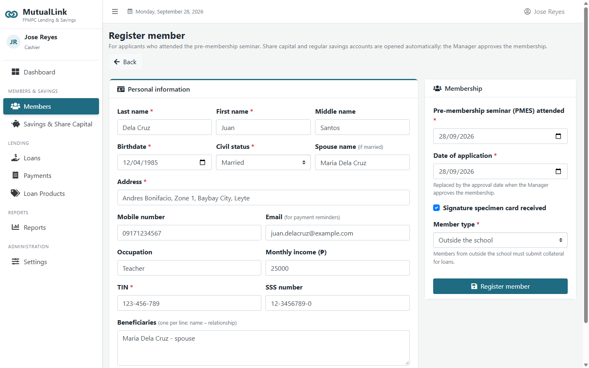
- 1Personal details. Fill in the name, birthdate, civil status, address, and contact numbers.
- 2TIN (required). Enter the TIN. FFMPC requires it for membership.
- 3PMES date. Date the applicant attended the pre-membership seminar.
- 4Signature card. Tick when the signature specimen card is received.
- 5Register member. Click to save. The member number and the Share Capital and Regular Savings accounts are created.
On saving, the system gives the member a number (FFMPC-2026-0001), opens a Share Capital and a Regular Savings account, and sets the status to Applicant. The member record shows a checklist of what is still missing.
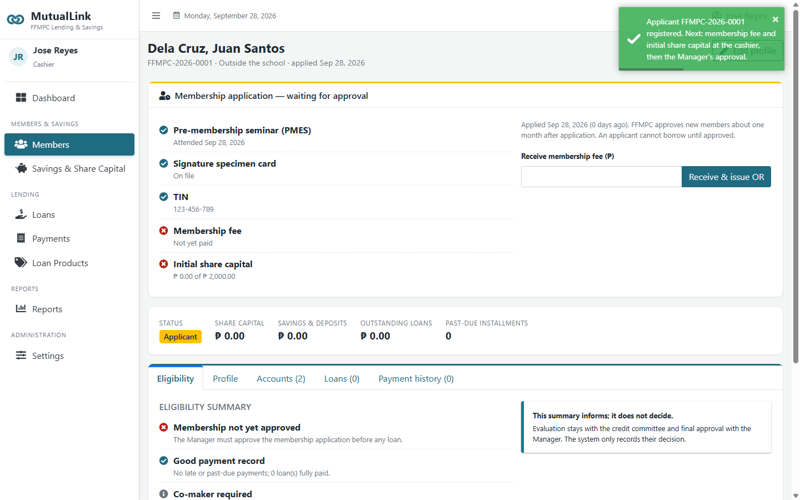
- 1Requirements checklist. Green is done, red is still missing. Here the fee and the share capital are missing.
- 2Receive membership fee. Enter the fee and click Receive & issue OR. The receipt opens.
- 3Status: Applicant. The member stays an Applicant until the Manager approves.
- 4Cannot borrow yet. The eligibility summary explains why a loan is not possible yet.
2 Cashier receives the membership fee
On the member record, enter the fee and click Receive & issue OR. The official receipt opens, ready to print.
- 1OR number. The next number in the official receipt series.
- 2Amount received. The membership fee paid by the applicant.
- 3Print receipt. Print the member's copy.
3 Cashier posts the initial share capital (₱2,000 required)
Open the Share Capital account and post a deposit (see A.3).
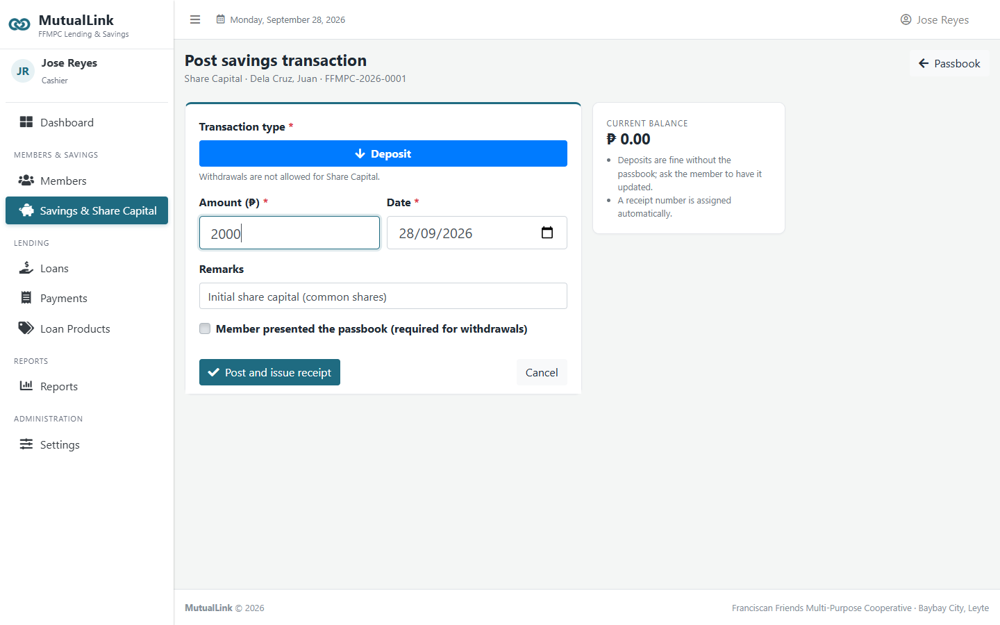
- 1Deposit only. Share capital accepts deposits; withdrawals are not allowed.
- 2Amount and date. Enter ₱2,000 for the initial share capital.
- 3Post and issue receipt. Saves the deposit, updates the balance, and issues an OR.
4 Manager approves the membership
Members → Applicants lists everyone waiting for approval.
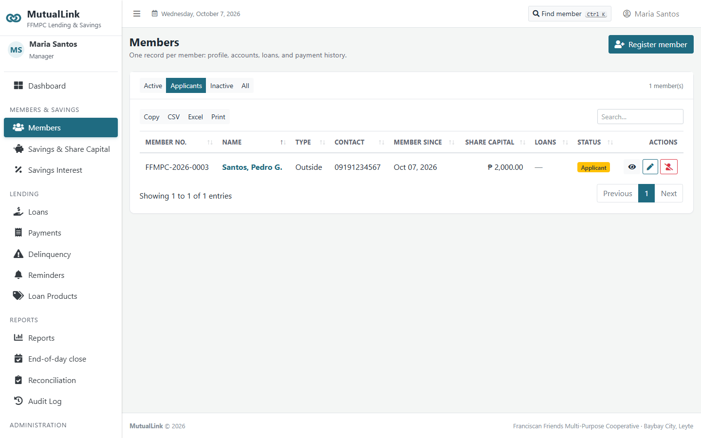
- 1Applicants filter. Shows everyone waiting for approval.
- 2Status: Applicant. Changes to Active after approval.
- 3Open record. Opens the member record, where the Manager approves.
When every requirement is green, the Approve membership button is enabled.
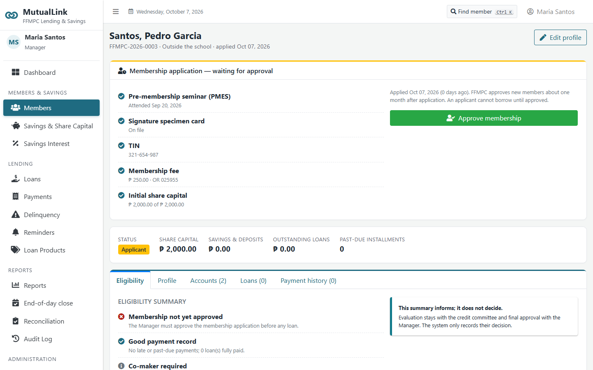
- 1All requirements met. PMES, signature card, TIN, membership fee, and ₱2,000 share capital are all green.
- 2Approve membership. Enabled only when every requirement is met.
After approval the member becomes Active, and the record shows the eligibility summary used for loans: good payment record, co-maker, collateral for members outside the school, existing loans, and share capital.
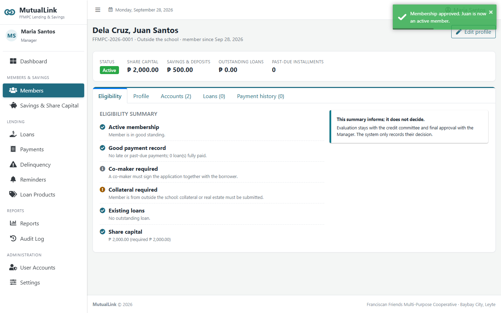
- 1Status: Active. The member can now apply for loans.
- 2Record tabs. Profile, accounts, loans, and payment history.
- 3Eligibility summary. Checked before every loan: membership, payment record, co-maker, collateral, existing loans, share capital.
Savings and share capital Cashier
Each member can hold one account of each type: Regular Savings, Share Capital, Capital Build-Up (CBU), Time Deposit. Every deposit or withdrawal writes one line with its running balance and a receipt number, so the passbook and the office ledger are the same record. FFMPC's rules (questionnaire 3.1–3.6), enforced by the system:
| Share capital required for membership | ₱2,000 |
| Regular savings maintaining balance (and opening deposit) | ₱500 |
| Time deposit minimum | ₱10,000 (or withdrawn in full) |
| Capital build-up | ₱100 per month (shown as a reminder) |
| Share capital and CBU withdrawals | Not allowed |
| Withdrawals | Need the passbook (lost passbook: notarized affidavit of loss) |
| Deposits | Allowed without the passbook |
A withdrawal that would go below the maintaining balance is refused, and the message says how much can be withdrawn:
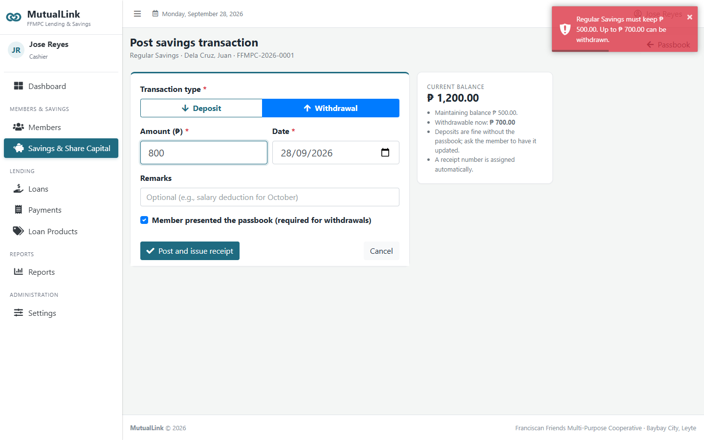
- 1Withdrawal. Choose Withdrawal and enter the amount (₱800 here).
- 2Passbook presented. Required for every withdrawal.
- 3Withdrawable now. The most that can be withdrawn while keeping ₱500.
- 4Refused. ₱800 would break the ₱500 maintaining balance, so the system refuses it.
The passbook lists every transaction with its receipt number, running balance, and who posted it. The Bookkeeper corrects an entry with a reversal (↺); the original line is never edited or deleted.
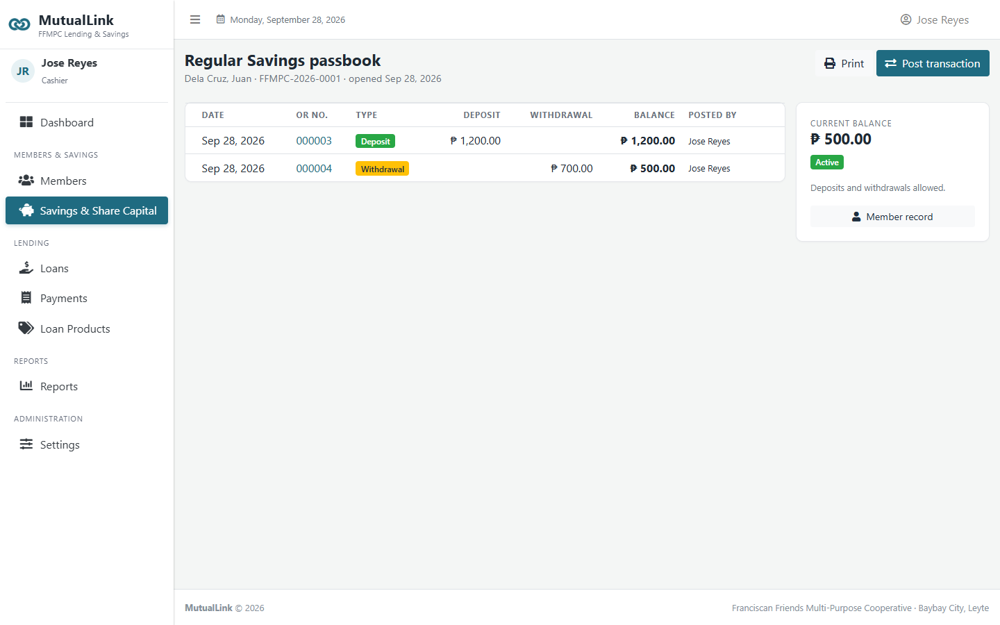
- 1Receipt number. Each line carries its own OR number.
- 2Running balance. The balance after each transaction.
- 3Post transaction. Opens the deposit or withdrawal form.
Loan application, approval, and release Loan Officer → Manager
| Product | Loanable amount | Term | Interest |
|---|---|---|---|
| Regular Loan | Up to 30% of the collateral's appraised value | Up to 12 months | 3% per month, diminishing |
| Salary Loan | Depends on net pay (recorded) | Up to 12 months | 3% per month, diminishing |
| Emergency Loan | Up to ₱3,000 | Up to 3 months | 3% per month, diminishing |
1 Loan Officer files the application
Loans → New application → find the member. Enter the product, principal, term, co-maker, collateral (type, description, appraised value), net pay for salary loans, and how the member will pay. The eligibility summary is shown beside the form.
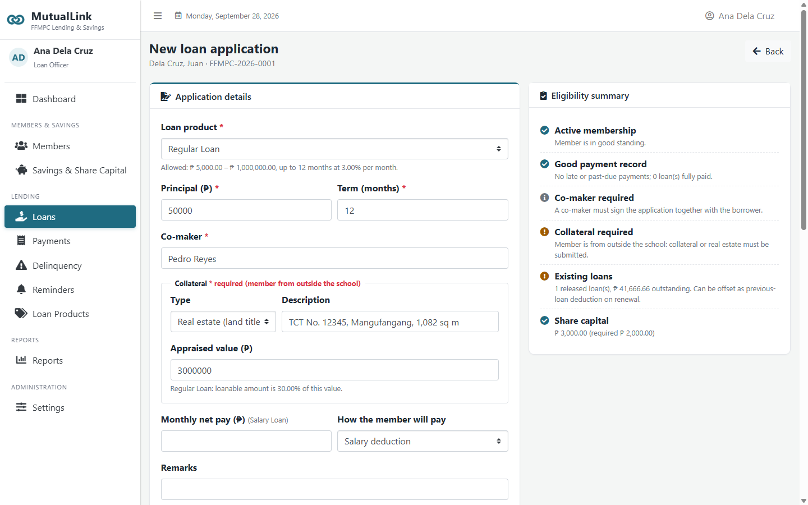
- 1Loan product. Regular, Salary, or Emergency Loan. The allowed range is shown below the field.
- 2Principal and term. The amount and the number of months.
- 3Co-maker. Required for every loan.
- 4Collateral. Required for members outside the school; loanable up to 30% of the appraised value.
- 5Eligibility summary. Shown beside the form while you encode.
The amortization preview is computed live (equal principal, 3% on the remaining balance) and includes the semi-monthly amount for salary deductions on the 15th and 30th. The example is ₱50,000 over 12 months: 4,166.67 principal + 1,500.00 interest = 5,666.67 for the first month, the same figures as FFMPC's handwritten computation.
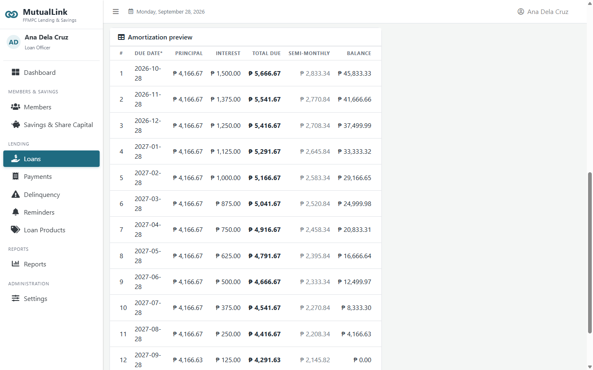
- 1Same principal. ₱4,166.67 every month (equal principal).
- 2Interest. 3% of the remaining balance, so it goes down every month.
- 3Total due. Principal plus interest: ₱5,666.67 in the first month.
- 4Semi-monthly. Half the monthly amount, for salary deductions on the 15th and 30th.
After submitting, the loan is Pending.
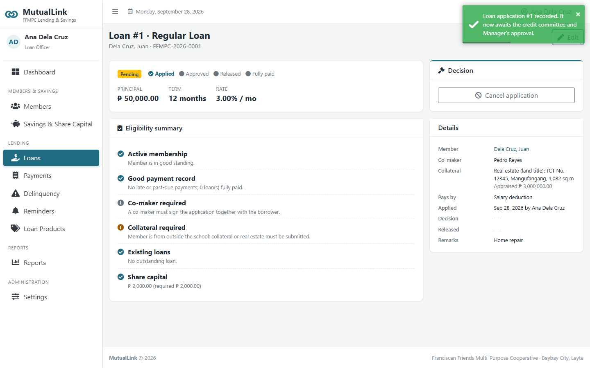
- 1Status and progress. Pending → Approved → Released → Fully paid.
- 2Eligibility summary. Information for the credit committee; the system does not decide.
- 3Details. Co-maker, collateral, and how the member will pay.
2 Manager records the decision
The system records the credit committee's evaluation and the Manager's decision; it does not decide the loan. The person who encoded the application cannot approve it (separation of duties).
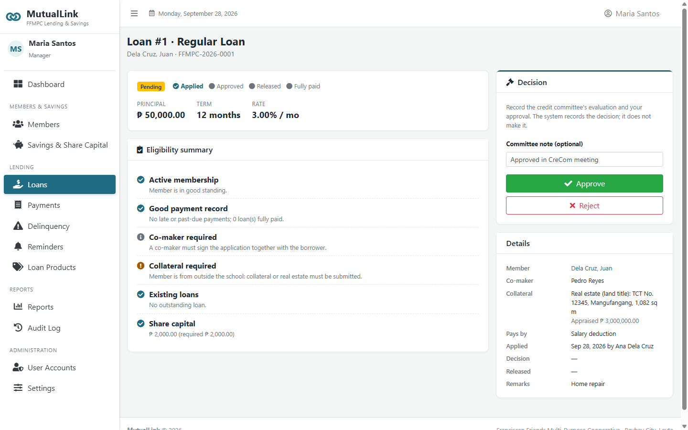
- 1Committee note. Optional note from the credit committee meeting.
- 2Approve. Records the Manager's approval.
- 3Reject. Records a rejection instead.
3 Manager releases the loan
Choose the release date and cash or check (a check needs its number). The deductions follow FFMPC's own "Summary of loan computation":
| Interest | Not deducted in advance |
| Loan insurance | 0.56% of principal |
| Service fee | 3% of principal |
| Stockshare | 2% of principal — added to the member's share capital |
| Notarial fee | ₱200 |
| Others (printing) | ₱30 |
| Previous loan (renewal) | Remaining balance of an old loan, if selected |
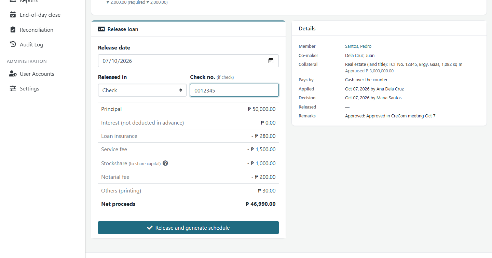
- 1Release date. The date the proceeds are released.
- 2Cash or check. A check needs its check number.
- 3Deductions. Insurance 0.56%, service fee 3%, stockshare 2%, notarial ₱200, printing ₱30.
- 4Net proceeds. What the member actually receives.
- 5Release. Releases the loan and generates the amortization schedule.
Releasing generates the amortization schedule. The loan record shows the schedule, payments, amount currently due, full payoff amount, and details.
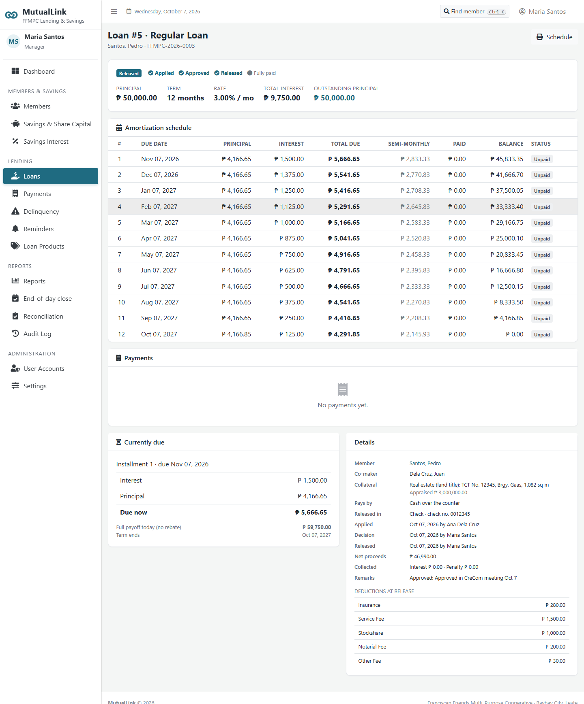
- 1Schedule. Opens the printable schedule.
- 2Outstanding principal. Goes down as payments are posted.
- 3Installment status. Paid, Partial, or Unpaid for each month.
Schedule prints the member's copy, with signature lines:
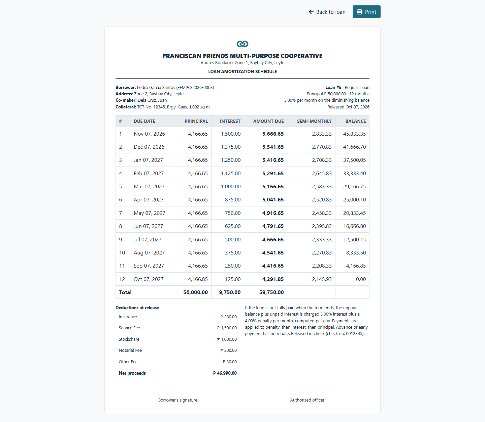
- 1Print. Prints the member's copy.
- 2Semi-monthly column. The amount for each payroll cut-off.
- 3After-term rule. 3% interest plus 4% penalty per month once the term ends.
- 4Deductions. Deductions at release and the net proceeds.
- 5Signatures. The borrower and the authorized officer sign here.
Loan payments and corrections Cashier → Bookkeeper
1 Cashier posts a payment
Payments → Post payment → find the member → choose the loan.
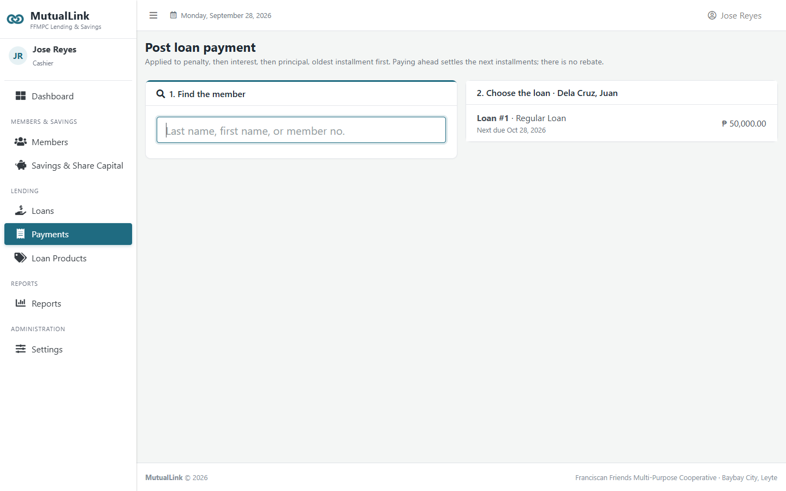
- 1Find the member. Type a name or member number, then pick from the list.
- 2Choose the loan. Click the loan being paid.
Quick buttons fill in the amount due now, the semi-monthly amount, or the full payoff. The preview shows how the amount will be applied, in FFMPC's order: penalty → interest → principal, oldest installment first. An amount larger than one installment settles the next ones in advance, and paying everything closes the loan early. There is no rebate.
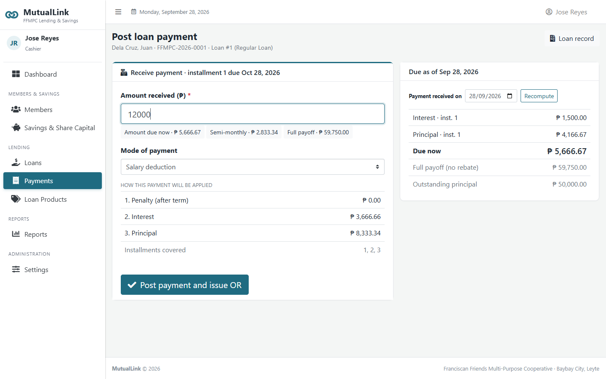
- 1Amount received. ₱12,000 here, which is more than one installment.
- 2Quick amounts. Fill in the amount due now, the semi-monthly amount, or the full payoff.
- 3How it will be applied. Penalty → interest → principal. Installments 1, 2, and 3 are covered.
- 4Post payment and issue OR. Saves the payment and opens the receipt.
- 5Due now / full payoff. What is due today, and the amount that closes the loan (no rebate).
One official receipt lists every installment the payment covered:
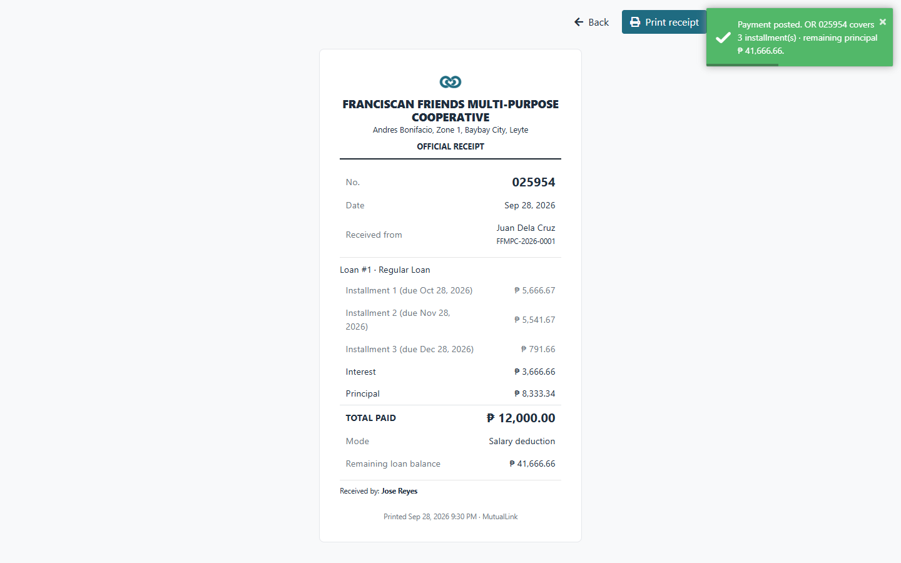
- 1OR number. One receipt for the whole payment.
- 2Installments covered. Every installment this payment settled.
- 3Total paid. Split into interest and principal just above.
- 4Remaining balance. Outstanding principal after this payment.
- 5Print receipt. Print the member's copy.
2 After the loan term (past due)
Once the loan term has ended, the unpaid principal + unpaid interest is charged 3% interest + 4% penalty per month, computed per day (the monthly rate spread over 30 days). The example is an Emergency Loan of ₱3,000 whose term ended 3 months ago: about 3 × 3% = ₱270 interest and 3 × 4% = ₱360 penalty, collected first.
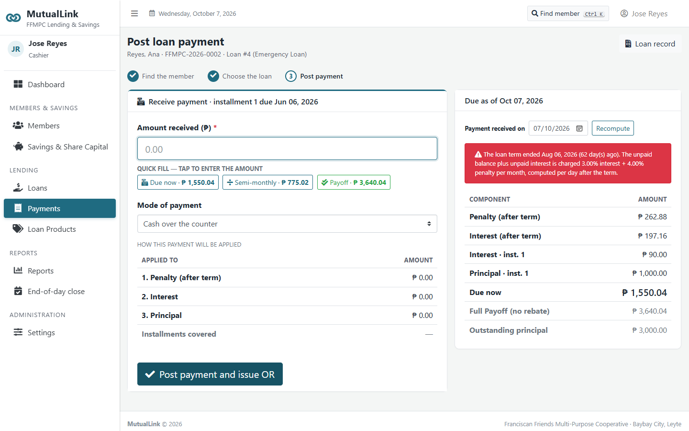
- 1Term ended. The loan term ended 3 months ago.
- 2After-term charges. Penalty 4% × 3 = ₱360 and interest 3% × 3 = ₱270, collected first.
- 3Due now. ₱1,720 including the after-term charges.
3 Bookkeeper voids a receipt
Only the latest receipt of a loan can be voided, and a reason is required.
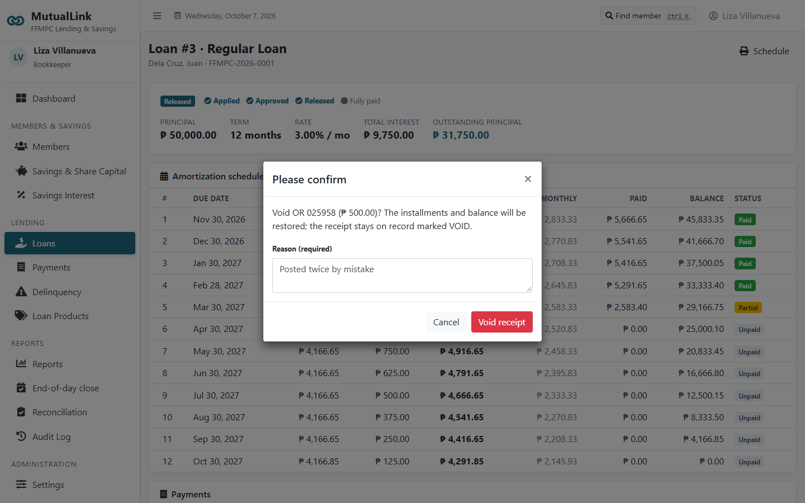
- 1Reason (required). Why the receipt is voided.
- 2Void receipt. Confirms the void; the receipt stays on record.
- 3Latest receipt only. Only the newest receipt of a loan has a Void button.
Voiding restores the installments, the balance, and the after-term charges exactly. The receipt stays on record marked VOID with its reason.
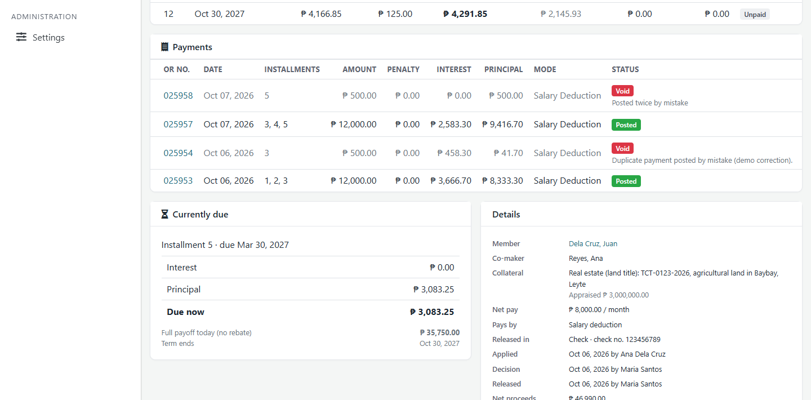
- 1Marked VOID. The voided receipt stays on record with its reason.
- 2Due again. Installment 3 is due again because the void restored it.
Delinquency monitoring and reminders Loan Officer
This is the part the bookkeeper said she would automate first (questionnaire 11.4). Delinquency → Update list now scans every schedule against the payments received, computes the days past due, and classifies each loan by aging bracket (1–30, 31–60, 61–90, 91–180, 181–365, over 365 days). The list shows the member's contact number, the co-maker, and the portfolio at risk.
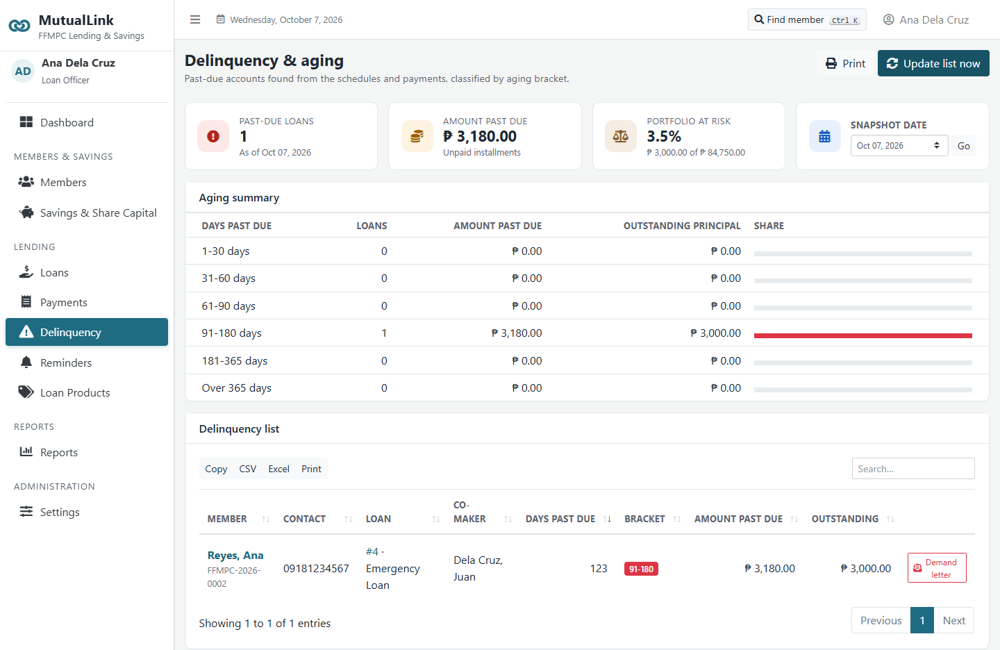
- 1Update list now. Scans every schedule against the payments received.
- 2Portfolio at risk. Share of the loan portfolio that is past due.
- 3Aging bracket. This loan is 133 days past due, in the 91–180 bracket.
- 4Demand letter. Prints a letter for the borrower, with a copy for the co-maker.
Demand letter prints a letter to the borrower listing the unpaid installments and the after-term charges, with a copy for the co-maker, since the co-maker is liable when the borrower fails to pay (questionnaire 7.4–7.5).
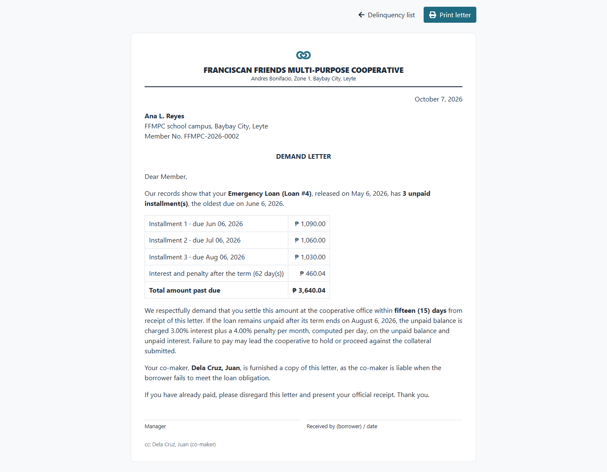
- 1Unpaid installments. Listed with their due dates.
- 2Total past due. Includes the after-term interest and penalty.
- 3Co-maker copy. The co-maker gets a copy and is liable.
- 4Print letter. Print it and have the borrower sign on receipt.
Reminders → Generate reminders prepares messages for installments due within 3 days and for overdue loans. Each can be opened in the email app (✉) and then marked sent or failed. Only sending the email needs an internet connection.
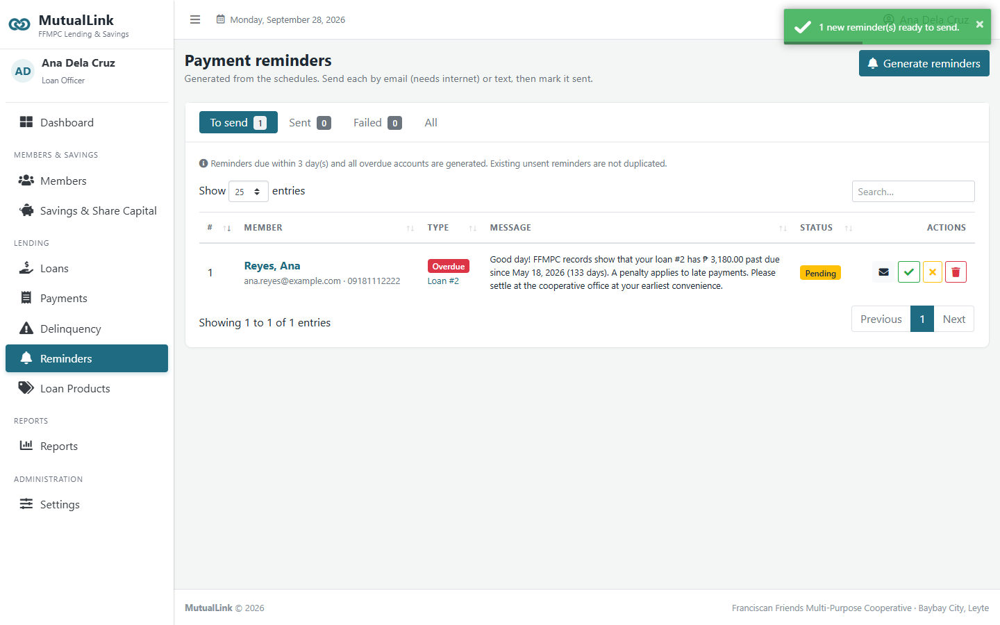
- 1Generate reminders. Creates messages for dues within 3 days and for overdue loans.
- 2To send / Sent / Failed. Filter the reminders by status.
- 3Open in email app. Opens a prepared email to the member.
- 4Mark sent or failed. Record the result after sending.
Reports, audit log, settings, and access control
Reports
Every report can be exported to Excel/CSV or printed, and each role sees only its reports. Daily collection supports end-of-day balancing: every receipt of the day with cash in, cash out, net, and totals per cashier.
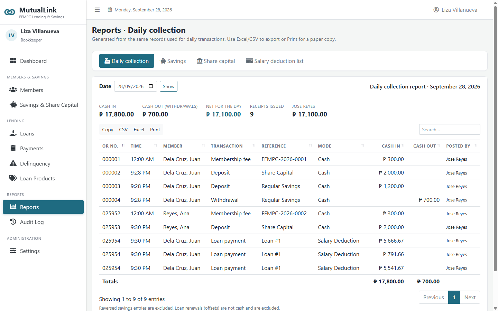
- 1Report tabs. Each role sees only its reports.
- 2Date. Pick the day to balance.
- 3Per cashier. Total collected by each cashier.
- 4Export or print. Copy, CSV, Excel, or Print.
- 5Totals. Cash in and cash out for the day.
Salary deduction list (prepared by the Bookkeeper): what to deduct on the 15th and the 30th for members who pay by salary deduction.
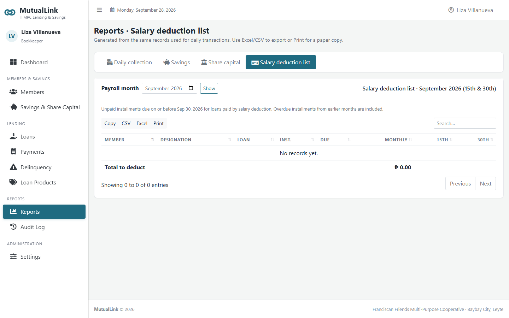
- 1Salary deduction list. Prepared by the Bookkeeper for payroll.
- 2Payroll month. Choose the month.
- 315th and 30th. The amount to deduct on each cut-off.
- 4Total to deduct. The sum for the whole list.
Share capital (Board / Auditor view), with each member's share of the total. The other reports are loan status and delinquency & aging.
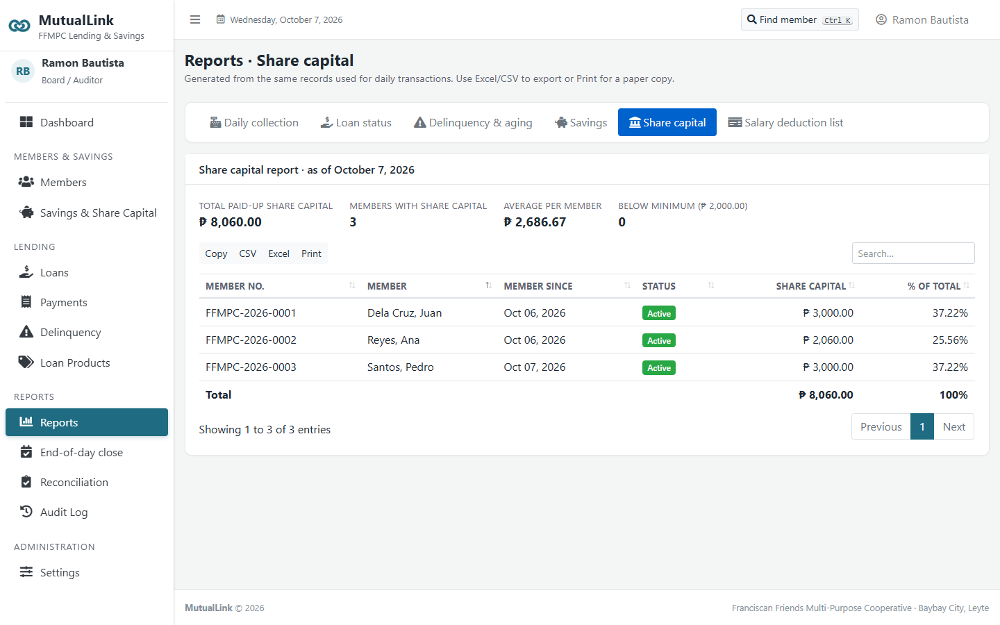
- 1Share capital. Report tab, read-only for the Board / Auditor.
- 2Summary. Total paid-up capital, members, average, and members below the minimum.
- 3% of total. Each member's share of the total.
- 4Export or print. Copy, CSV, Excel, or Print.
Audit log
Every sign-in, entry, approval, correction, and settings change is recorded with the user and time. The log cannot be edited.
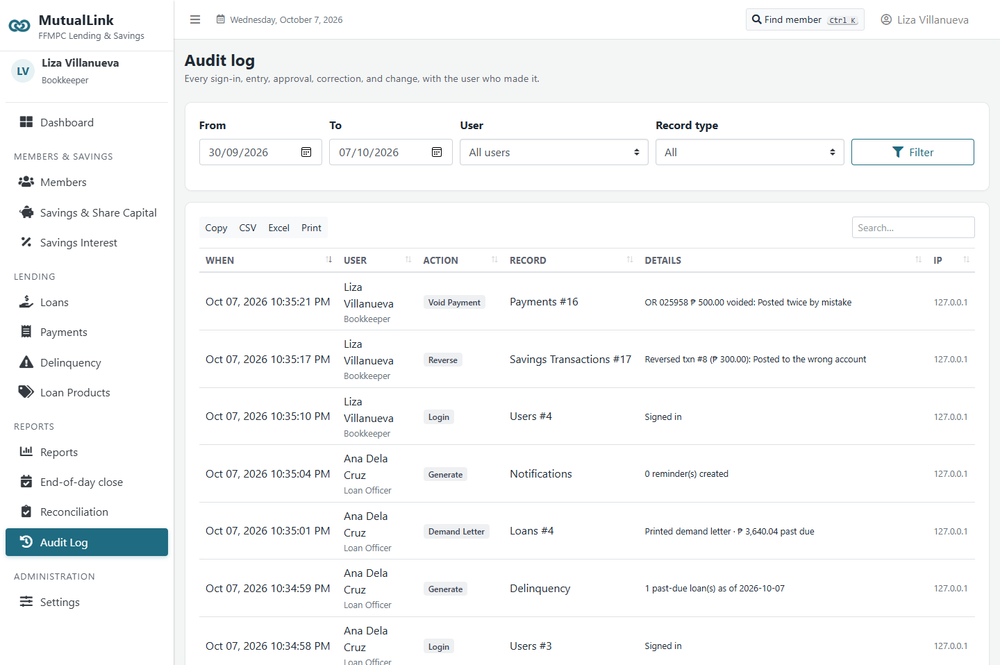
- 1Filters. By date range, user, and record type.
- 2Who. The user and role that made the change.
- 3What changed. Details of the action, such as the voided OR and its reason.
Settings Manager
Deduction rates, the collateral loanable percentage, account minimums, reminder timing, aging brackets, and the official receipt series. The Manager sets the last number issued to match the receipt booklet, and the series can only move forward. The panel on the right checks the rates against FFMPC's ₱26,000 sample computation.
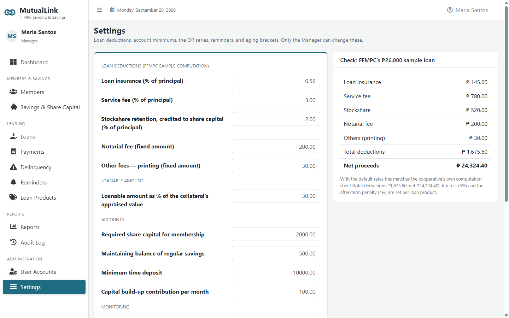
- 1Deduction rates. Insurance, service fee, stockshare, notarial, and printing fees.
- 2Account minimums. Share capital, maintaining balance, time deposit, and CBU.
- 3Sample check. Recomputes FFMPC's ₱26,000 sample with the current rates.
User accounts Manager
Add, edit, reset passwords, and deactivate staff accounts. Accounts are never deleted, so the audit trail stays intact, and at least one active Manager must always remain.
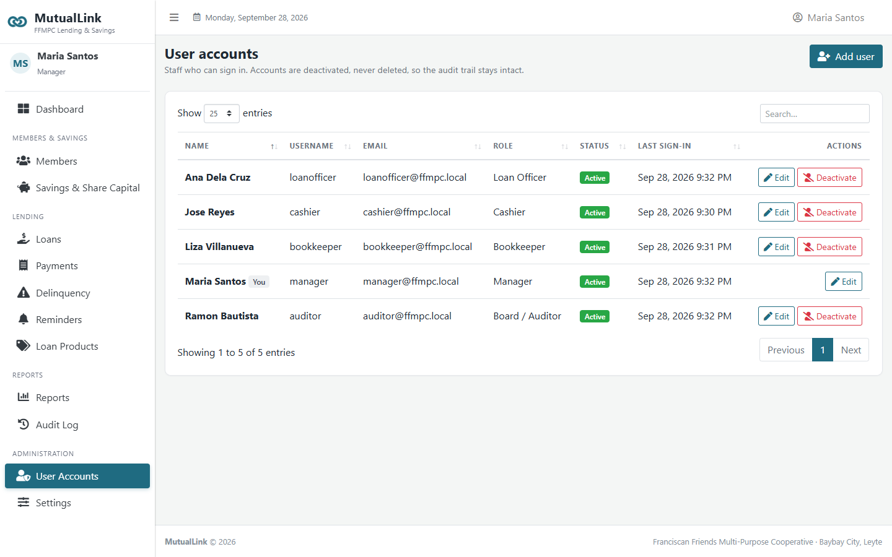
- 1Add user. Create a staff account and choose its role.
- 2Role. Decides what each person may do.
- 3Deactivate. Accounts are deactivated, never deleted.
- 4You. You cannot deactivate your own account.
Access control
A role that opens a page it is not allowed to use gets Access denied, even when typing the address directly. Shown here is the Board / Auditor trying to add a user.
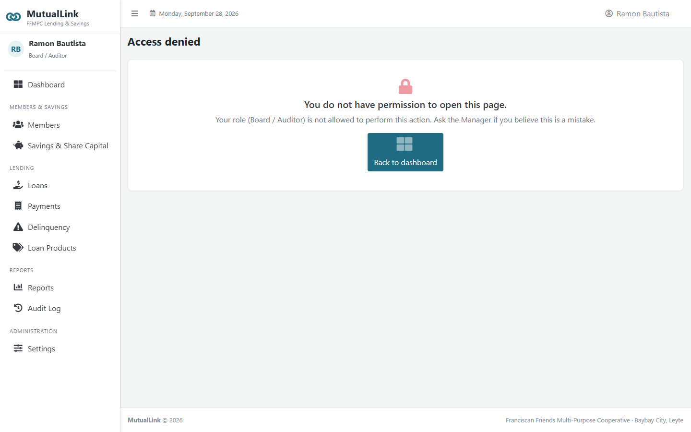
- 1Blocked. The Board / Auditor tried to open Add user.
- 2Back to dashboard. Returns to the pages the role may use.
About the sample data
- Juan Dela Cruz (FFMPC-2026-0001, outside the school) was registered, paid the membership fee, deposited ₱2,000 share capital and ₱1,200 regular savings, withdrew ₱700, and was approved. His Regular Loan #1 (₱50,000 / 12 months, land title appraised at ₱3,000,000) was released by check. A ₱12,000 salary-deduction payment covered installments 1–3, and a ₱500 duplicate payment was voided by the Bookkeeper.
- Ana Reyes (FFMPC-2026-0002, school-based) has an Emergency Loan #2 of ₱3,000 / 3 months. To show the past-due features, its approval and release dates were set about five months in the past directly in the test database. Everything else went through the normal screens.
- Receipts 000001–000004 were issued before the Manager set the series to the booklet number; later receipts continue from 025952.
Development process
How the system was built: requirements, decisions, build order, security, testing, and installation.
Requirements sources
- Capstone manuscript, Revisions 21 and 24: objectives, scope, the Chapter III technical background, and Figures 1–11 (architecture, network, RAD model, data schema, context diagram, DFD levels 1–2, ERD).
- Requirements-gathering questionnaire answered by the FFMPC bookkeeper (Appendix A): membership steps, account minimums, loan products, eligibility, deductions, penalty, payment modes, receipts, delinquency, reports, and user roles.
- Photos of FFMPC's manual records: the sample loan computation (₱26,000 / 9 months with its deductions), the handwritten computation (₱50,000 / 12 months, "Past due 3% + Penalty 4% = 7%"), the receipt booklet (numbered series), and the payroll deduction sheet (15th and 30th).
- Course materials: the professor's code snippets (PDO connection, same-page form handling,
dashboard.php?page=routing, AJAX existence check, Toastr) and the report topics (PDO & CRUD, REST APIs, authentication & authorization, validation & vulnerabilities, front-end integration, indexing, database security, backup).
Decisions confirmed with the team
| Question | Decision |
|---|---|
| AdminLTE version | 3.2.0 on Bootstrap 4.6.1, the same as the mid-semester project (Chapter III should be updated from 4.9.1 / 5.3.8) |
| Scope | All three RAD versions, each as CRUD |
| Architecture | Server-rendered pages (professor's pattern) plus a few JSON endpoints |
| Email reminders | Recorded in the system; staff send them from their email app |
| Database account | Least-privilege account instead of root |
| Member registration | Cashier and Manager; the Manager does not post money |
| Amortization | Equal principal, 3% on the diminishing balance, which matches FFMPC's sample |
| Late payment | 3% interest + 4% penalty = 7% per month on the unpaid balance once the term is surpassed |
| Aging brackets | 1–30, 31–60, 61–90, 91–180, 181–365, over 365 days (editable) |
Build order (RAD versions)
| Commit | What was built |
|---|---|
f505152 | Design specification |
ca7b002 | Database schema (13 tables from Figure 4 plus settings), PDO and security configuration, loan computation library with tests |
dbb9b83 | Version 1: sign-in, role-based route guards, layout, dashboard |
5c7dd10 | Version 1: user accounts, members, savings and share capital, receipts, JSON endpoints |
6e36709 | Version 2: loan products, applications, approval, release, payments, voids |
8147db5 | Version 3: delinquency and aging, reminders, reports, audit log, settings |
da8dbf4 | README with WAMP installation and defense notes |
004d0b8 | Fixes from a full code review |
53346df | Alignment with Revision 24 and the questionnaire answers (FFMPC name, logo, deductions, after-term penalty, advance payments, membership approval, savings minimums, OR series, salary deduction list, demand letter) |
feb30ee | Logo shown without a box |
feee2f1 | Documentation screenshots; loan page layout fix |
Security applied (course topics)
| Topic | How it is applied |
|---|---|
| Password storage | password_hash (bcrypt, cost 12), password_verify, password_needs_rehash |
| Sessions | HttpOnly and SameSite cookies, strict mode, new session ID on sign-in, browser binding, 15-minute idle timeout, full logout |
| Authorization | One role-permission matrix used by the route guards, the sidebar, and the buttons |
| Route guards (middleware functions) | require_login() → require_permission() → require_csrf() before every page and endpoint |
| CSRF | Random token on every form and JSON request, checked with hash_equals |
| SQL injection | PDO prepared statements with named parameters, native prepares |
| XSS | Every output escaped with htmlspecialchars(ENT_QUOTES, 'UTF-8'); JavaScript uses textContent; Content Security Policy blocks inline scripts |
| Validation | Server-side validation of every input, with all errors shown together |
| Money integrity | Database transactions with row locks for postings, voids, and releases; receipts are never deleted, only voided or reversed |
| Database | Least-privilege account (SELECT, INSERT, UPDATE, DELETE only), indexes on keys and searches, insert-only audit log, backup script |
Testing
| Test | Result |
|---|---|
tests/loan_calc_test.php: schedule, deductions, after-term charges, payment allocation, aging brackets, including FFMPC's ₱26,000 / 9-month sample (interest 780.00, 693.33, … 86.67; deductions ₱1,675.60; net ₱24,324.40) | All checks pass |
tests/loan_flow_test.php: release, after-term charges, partial payment, full payoff on one receipt, void, advance payment, renewal offset, savings minimums (against the database) | All checks pass |
| Role-by-role walkthrough over HTTP and in the browser (this guide) | All steps as described |
| Forbidden actions for each role (pages and buttons) | Refused: Access denied |
| Full code review (security and money correctness) | One finding, fixed |
Installation
- Copy the
mutuallinkfolder toC:\wamp64\www\mutuallink. - Open phpMyAdmin as
root→ Import →database/mutuallink.sql. - Open http://localhost/mutuallink and sign in. This guide is at
http://localhost/mutuallink/documentation/.